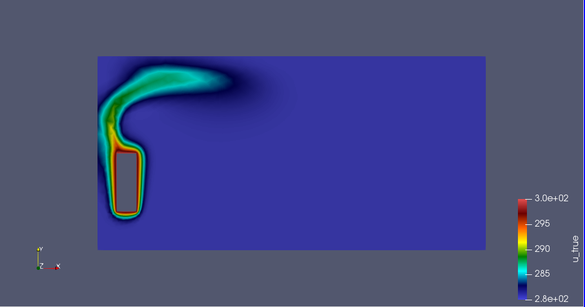

Case Study 2: Sensor locations and Update Space
\(\quad\)In these case, we will study the result obtained for the case \(N = 2\) and \(M\) take the values from 2 to 12. We use the same model and parameter of Heat transfert and Heat & Fluid with the first case. For evaluating the PBDW approximation, we will compute some type of error with some confort norm. We will also discuss in reflections on Stability and Approximation Quality. Thus, we can make choices to better adapt the PBDW method to the chosen case study. Moreover, we will verify some property that we made over the methodology for estimate the righteousness of thid method.
The placement of sensor defind the informations of data points. We can chose their locactions by random selection or manual selection, and selection by a Greedy algorithm over the set of solution thank to method of GEIM. In this case study, the data point is chosen randomly among a list of possible data points.
The strategy of study is to vary \(M\) and \(r\) to look how the choices of sensor can influence the method. We will compute the stability constant, the conditional number of matrix \(\mathbb{K}^{PBDW}\), the best-fitt error, the boundary error, log scale error. We will compare 3 case of radius \(r = 0.05, 0.15, 0.35\)
|

The stability constant is well non-decreasing in function of M. Largger M, better stability constant. The radius of the zone surround the sensor influe clearly la computation of \(q_m\) then the stabily constant.
So we can improve the stability constant by increase the number of data points, for each fixed background RB dimensional \(N\).
Note that with the very low value of \(\beta_{N,M}\), the formulation is less stable in the case \(M = N\). So we can avoid to make choice \(N = M\) for a better stability.
|

We can also look at the condition matrix \(\mathbb{K}^{PBDW}\) which compute by
We can see that the smaller \(r\) give a matrix better conditioned. The condition number of \(\mathbb{K}^{PBDW}\) depend weakly to the number of \(M\). Given this knowledge, we should work with \(r\) in oder to improve the condition number.
Moreover, in this case, even with a largest \(r\), the matrix of PBDW is well conditioned ( \(10^1\)). So it isn’t much sensitive in change of \(r , M\), and the error of input. Because the condition number is used to measure how sensitive a solution is to changes or errors in the input, and how much error in the output results from an error in the input.
In this case, we have a 'true' model that provide information synthetic to the observations. So we can use it as an exact solution to compute PBDW approximation error.But in most cases, we don’t have this model. So in pratice, we can use the synthetic data to creat an best knowledge model with the data pointwise.
|

|

We compute the best-fit error with two norm \(H^1\) set \(L2\) and note that with the second norm, error is smaller. Ths best-fit error is not only interrested by the value absolute error but also useful with some order of magnitude and percentage error. Like this, we can determine how much error we are and trying to correct.
|

|

This plot present exactly correlates between quantities best-fit error, boundary error and priory error.
Recall the \(u^{true}\) solution

|
We present the error logscale in some value of \(M\)
|
|
\(u_{N,M}\) |
Log scale of error |


|
|
\(u_{N,M}\) |
Log scale of error |


|
|
\(u_{N,M}\) |
Log scale of error |


Through theses simulations, we see that the approximation of PBDW is more close to the true physical state. With the log scale error, we can recognize easily the zones which are bad approximating. This is the area arround the heat source where the difference of temparature is large and it don’t have much sensor to capture enough data.
Otherwise, the log scale of error is between -4. to 4. This show that our approximation is well close to what we expect and trustable.
|
|
|
|
\(\varphi_m(x) = \chi_{B(x_c,r)}f(x)\) |
\(\varphi_m(x) = f(x)\) |


As dicussion in the first case, we observe that a loss of smoothness function sensor can affect the less smooth update basis function then cause a less stable PBDW. We take an characteristic function as an example of a loss od smoothness function and then compare the stability with the more smooth one.

|
So with a more smooth function sensor, we obtain better stability number.
In fact, the actual radius \(r\) is generally quite small (in centimeters) . It lead to the calculation domain quasi-pointwise. So we prefert to modify the norm used in the definition of update basis functions in order to improve its continuity.
where \(L_g > 1\) is some characteristic length of the domain. Noticing that the \(\widetilde{H}^1(\Omega)\) is clearly equivalent to the \(H^1\) norm.

|
Why this norm ? Because the support of each basis function is much larger, and the peak much lower, providing more smooth functions.
So in order to have a better approximation pf PBDW, we need to ensure
+ a large \(M\)
+ optimize location of the sensor in the sensitive zone or improve the method of choosing sensor like using method of Greedy thank to GEIM.
+ using smooth function sensor to improve the continuity of update basis function.